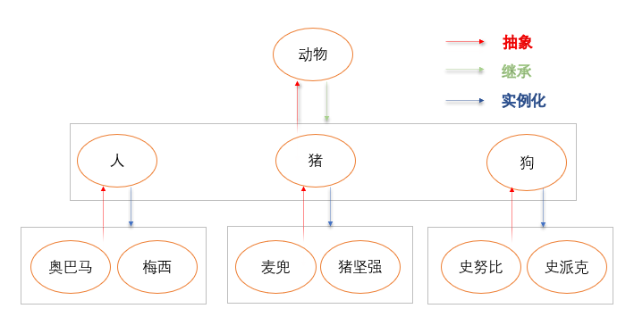
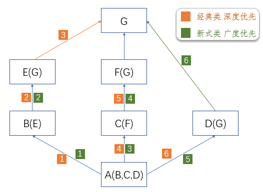

继承和组合
新式类与经典类¶
继承是一种新建类的方式,新建的类称为 子类 /派生类 ,被继承的类称为 父类 /基类/超类
在python中支持 一个类同时继承多个父类继承的特性: 子类会 ‘遗传’ 父类的属性
继承的好处: 解决代码重用的问题 可以减少代码的 冗余.强调! 继承是类与类之间的关系
新式类: 但凡继承了object类的 类以及该类的子类 都是新式类.
在python3中,如果一个类没有继承任何类,那么默认继承object类
因而 在python3中的类都是新式类
经典类: 没有继承object类的 类以及该类的子类 都是经典类
在python2中,如果一个类没有继承任何类,不会默认继承object类
因而 只有在python2中才区别新式类与经典类
Ps: object类是所有python类的基类,它提供了一些常见方法(如打印对象时返回字符串的内置方法__str__).
class Parent1:
pass
class Parent2:
pass
class Sub1(Parent1, Parent2):
pass
# __bases__列出当前类继承的所有父类 __base__只查看从左到右继承的第一个父类
print(Sub1.__bases__) # (<class '__main__.Parent1'>, <class '__main__.Parent2'>)
print(Sub1.__base__) # <class '__main__.Parent1'>
print(Parent1.__bases__) # (<class 'object'>,) Python3中默认继承object类
继承¶
☆继承与抽象¶
抽象就是找多个事物相似之处的过程.
找对象的相似地方就得到了类,找类的相似处就得到了父类. (目的在于减少代码的冗余..)

☆继承与重用性¶
继承是强耦合¶
OldboyStudent类中应该放学生相似的特征与技能,以及每个学生独有的特征
OldboyTeacher类同理.
但这两个类有重复的代码(相似之处),eg: school属性 实例化对象的name、age、sex
创建一个OldboyPeople类存放重复代码,OldboyStudent和OldboyTeacher通过 继承 OldboyPeople类.
进而可以使用父类中的所有属性( 数据属性和函数属性 ). 实现代码重用 , 减少类与类之间的代码冗余..
题外话: 继承实则将类强耦合在了一起,不要让继承关系套太多!!! 更应该推崇解耦合的思想!
注意点: OldboyPeople.__init__(self, name, age, sex)这行代码跟继承没有半毛钱关系
class OldboyPeople:
school = 'oldboy'
def __init__(self, name, age, sex):
self.name = name
self.age = age
self.sex = sex
class OldboyStudent(OldboyPeople):
def choose_course(self): # -- 选课
print('%s is choosing course..' % self.name)
class OldboyTeacher(OldboyPeople):
def __init__(self, name, age, sex, level):
# 再次强调,通过类调用的方法就是一个普通函数,有几个参数就传几个参数
OldboyPeople.__init__(self, name, age, sex) # 这行代码跟继承没有半毛钱关系
self.level = level
# 传入stu_obj参数 表明给谁打分 实现了实例化对象之间的交互
def score(self, stu_obj, num): # -- 打分
stu_obj.score = num
print('%s正在为学生%s打分,分数为[%s]分..' % (self.name, stu_obj.name, num))
stu1 = OldboyStudent('小川', 20, 'male')
teacher1 = OldboyTeacher('egon', 18, 'male', 10)
# 实例化对象查找属性的顺序: 实例化对象自己 - 实例化对象的类 - 父类
print(stu1.school) # oldboy
stu1.choose_course() # 小川 is choosing course..
teacher1.score(stu1, 99) # egon正在为学生小川打分,分数为[99]分..
# 'score': 99 实例化对象之间交互的结果
print(stu1.__dict__) # {'name': '小川', 'age': 20, 'sex': 'male', 'score': 99}
属性查找顺序¶
!!!实例化对象查找属性的顺序: 实例化对象自己 - 实例化对象的类 - 父类 - ... - 直到顶级父类Object类
补充: getattr方法的查找顺序跟它是一样的!!
分析如下:
func2的查找顺序: obj实例化对象的__dict__中找 - B类 - A类 找到func2
执行func2 打印了'A.func2' self.func1() <这里的self就是实例化对象obj>
func1的查找顺序: obj实例化对象 - B类 找到了func1
执行func1 打印了'B.func1'
class A:
def func1(self):
print('A.func1')
def func2(self):
print('A.func2')
self.func1()
class B(A):
def func1(self):
print('B.func1')
obj = B()
obj.func2() # -- 注意这里传入的self对象是谁!!
"""
A.func2
B.func1
"""
Mixins机制¶
Python提供了 Mixins机制 , mixin类的命名方式一般以 Mixin, able, ible 为后缀, 表明这个类是一个Mixin类, 表示混入(mix-in), 这个类是作为功能添加到子类中, 而不是作为父类, 它的作用同Java中的接口!! 但使用该机制本质还是多继承..
一个类可以继承多个Mixin, 为了保证遵循继承的 “is-a” 原则, 只能继承一个标识其归属含义的父类
子类即便没有继承这个Mixin类,也照样可以工作,就是缺少了某个功能(比如飞机照样可以载客,就是不能飞了)
派生¶
在子类中定义的属性称为派生
子类可以添加自己新的属性或者重新定义继承到的某些属性(不会影响到父类),
在使用某属性时,若子类中存在,则以子类存在的为准
小声bb,感觉就是只要是子类,那么子类中定义的所有东西都是 '派生' 出来的...这概念很魔幻.这也就是子类也被称作派生类的原因吧
在子类派生出来的功能中重用父类功能的方式有两种:
1> 指名道姓访问某一个类的函数: 该方式与继承无关
eg: 前面的代码 OldboyPeople.__init__(self, name, age, sex)
2> super()
组合¶
☆重用性¶
组合就是一个类的实例化对象具备某一个属性, 该属性的值是指向另外一个类的实例化对象.
回顾: 用继承来解决代码的冗余. 【组合和继承都是为了解决类与类直接冗余的问题的！！！】
羊、牛、狗都是动物.是一种从属关系.所以羊类牛类狗类都继承动物类.
学校里的 学生和老师 都是(属于)学校的人. 所以 OldboyStudent和OldboyTeacher类 继承 OldboyPeople.
选课系统中肯定需要一个'课程'的角色. 老师授课, 学生选课.. 老师跟学生都要关联课程.
学生和老师跟学校是从属关系 (什么 '是' 什么), 那么学生和老师跟课程是什么关系？
首先我们想到的是 学生选课后有了一门课程,即有了课程的相关信息, 是什么 '有' 什么的关系...
这些课程信息是 学生对象独有的 ,所以需要将课程相关信息往__init__里面放. 老师同理.
class OldboyPeople:
school = 'oldboy'
def __init__(self, name, age, sex):
self.name = name
self.age = age
self.sex = sex
class OldboyStudent(OldboyPeople):
def __init__(self, name, age, sex, stu_id, course_name, course_period, course_price):
OldboyPeople.__init__(self, name, age, sex)
self.stu_id = stu_id
# 定制课程相关属性/数据
self.course_name = course_name
self.course_period = course_period
self.course_price = course_price
class OldboyTeacher(OldboyPeople):
def __init__(self, name, age, sex, level, course_name, course_period, course_price):
OldboyPeople.__init__(self, name, age, sex)
self.level = level
# 定制课程相关属性/数据
self.course_name = course_name
self.course_period = course_period
self.course_price = course_price
出现了代码重用的问题, 现阶段的第一反应是将其放到父类OldboyPeople里. 但不合理 , 不是学校的人都需要有课程的相关信息... 比如 管理员是学校的人但不需要与课程关联.
Ps: 仔细想想, 将课程信息写到__init__里也有点不合理, 学生对象不是一造出来就要选课.
☆组合¶
解决办法: 将课程自成一个类！
组合就是一个类的实例化对象具备某一个属性, 该属性的值是指向另外一个类的实例化对象.
class Course:
def __init__(self, name, period, price):
self.name = name
self.period = period
self.price = price
def tell_info(self):
print(f'课程名:{self.name} 周期:{self.period} 价格:{self.price}')
class OldboyPeople:
school = 'oldboy'
def __init__(self, name, age, sex):
self.name = name
self.age = age
self.sex = sex
class OldboyStudent(OldboyPeople):
def __init__(self, name, age, sex, stu_id):
OldboyPeople.__init__(self, name, age, sex)
self.stu_id = stu_id
self.choice_course = []
def choose_course(self):
print('%s is choosing course..' % self.name)
class OldboyTeacher(OldboyPeople):
def __init__(self, name, age, sex, level):
OldboyPeople.__init__(self, name, age, sex)
self.level = level
self.teach_course = []
def score(self, stu_obj, num):
stu_obj.score = num
print('%s正在为学生%s打分,分数为[%s]分..' % (self.name, stu_obj.name, num))
python = Course('python全栈开发', '5month', 10000)
linux = Course('linux运维', '4month', 8000)
stu1 = OldboyStudent('小川', 20, 'male', '001')
teacher1 = OldboyTeacher('egon', 18, 'male', 10)
# -- 将学生、老师与课程关联/组合
"""这种方式 每个学生只能选一门课 每个老师只能教一门课
stu1.course = python
teacher1.course = linux
stu1.course.tell_info()
teacher1.course.tell_info()
"""
# PS:还可以扩展 老师教学哪些学生
# 关键代码 self.teach_stu = []; teacher1.teach_stu.append(stu1)
# 学生可以选多门课 老师也可以教多门课
stu1.choice_course.append(python)
stu1.choice_course.append(linux)
teacher1.teach_course.append(linux)
for course_obj in stu1.choice_course:
course_obj.tell_info()
菱形继承问题¶
此小节的理论知识涉及python继承底层实现原理. 面试很爱问哦..
☆菱形继承¶
菱形继承: 当一个子类继承多个父类时, 多个父类最终继承了同一个类,(多个类的分支汇聚到同一点啦).
经典类下查找属性: 深度优先查找
新式类下查找属性: 广度优先查找

☆c3算法与mro¶
在新式类中, python为其内置了一个mro方法.
>>> A.mro() # -- 等同于A.__mro__
[<class '__main__.A'>, <class '__main__.B'>, <class '__main__.E'>, <class '__main__.C'>, <class '__main__.F'>, <class '__main__.D'>, <class '__main__.G'>, <class 'object'>]
这个mro列表的构造是通过一个C3线性化算法来实现的. 属性查找遵循三条准则:
1> 子类会先于父类被查找
2> 多个父类会根据它们在列表中的顺序被查找
3> 若第一个父类和第二个父类都存在合法的选择, 选择第一个父类.
super¶
在子类派生出来的功能中重用父类功能的方式有两种:
方式一 : 指名道姓访问某一个类的函数: 该方式与继承无关 类名.函数名
方式二 : 严格依赖mro继承属性查找关系
super() 会得到 一个特殊的对象 用于 专门访问父类 中的属性..
(按照继承关系 该对象专门从当前父类开始往后查找)
super().__init__()因为super()是一个对象,所以此处是 绑定方法 ,不用单独为self传值！！
class People:
def __init__(self, name, age, sex):
self.name = name
self.age = age
self.sex = sex
class Student(People):
def __init__(self, name, age, sex, stu_id):
# super()这一特殊对象用于专门访问父类中的属性
# <class '__main__.People'>, <class 'object'> 都是当前Student类的父类
super().__init__(name, age, sex)
self.stu_id = stu_id
stu1 = Student('egon', 19, 'male', '007')
# {'name': 'egon', 'age': 19, 'sex': 'male', 'stu_id': '007'}
print(stu1.__dict__)
# [<class '__main__.Student'>, <class '__main__.People'>, <class 'object'>]
print(Student.mro())
super()是简写,完整的写法是 super(Student,self).__init__(name, age, sex),在python2中需要写完整..
解析super(Student,self)的参数:
第一个参数:: 表示根据指定的类(eg Student类),在继承链中 获取它“Student”的 [下一个] 类.
不写默认就是super()所在的当前类
第二个参数:: 表示获取self对象所在的类的mro继承链 即 type(self).__mro__
简而言之, super不一定就是父类, 而是要看里面的self是谁. super(xxx, self)一定是type(self)对应的mro中, xxx的下一个类.
注意哦！ 即使没有直接继承关系,super仍然会按照mro继续往后查找!
class A:
def f1(self):
print('A.f1')
class B:
def f2(self):
# 这个super是以C类触发的查找,应该遵循C的mro 'C-B-A-object'
# 但到这里,mro查找进行到了B
# 因而这里可以写成 super(B, self).f1() self是C类的mro继承链
# 往后即查找C类mro继承链中B后面的A类是否有f1方法
super().f1()
print('B.f2')
class C(B, A):
def f1():
print('C.f1')
# [<class '__main__.C'>, <class '__main__.B'>, <class '__main__.A'>, <class 'object'>]
print(C.mro())
obj = C()
obj.f2() # obj - C - B f2()
"""
A.f1
B.f2
"""
class B:
def run(self):
print('run B')
class A(B):
def func1(self):
super(A, self).run()
def run(self):
print('run A')
a = A()
a.func1() # -- run B